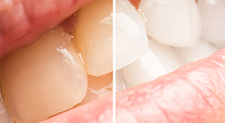

Whiteningホワイトニング
歯の黄ばみを落として白く美しく～ホワイトニング～

あなたは笑顔に自信を持っているでしょうか。白く輝く歯は、笑顔を引き立ててくれますが、歯には毎日口にする食べ物の色素が沈着してしまうことがあります。加えて、年を重ねていけば、黄ばみができるのも避けられないでしょう。
もし、いつの間にか白くなくなってしまった歯にお悩みでしたら、千葉県南柏の歯医者「さかいね歯科クリニック」にご相談ください。当院では、歯を削らずに薬剤で白くするホワイトニングをご提供しています。
ホワイトニングの注意点
ホワイトニングの効果には個人差があり、中にはおすすめできないケースもあります。こちらでは、まず施術前に知っておいていただきたい点をご紹介します。
ホワイトニングの種類

ホワイトニングには大きく分けて2つの種類があります。歯科医院で施す「オフィスホワイトニング」と、ご自宅で施していただく「ホームホワイトニング」です。それぞれに特徴がありますので、あなたに合った方法を選ぶことが大切です。
また、当院ではすばやく歯を白くした後、その白さを長持ちさせるために、「オフィスホワイトニング」の後で「ホームホワイトニング」を続けていただく、「デュアルホワイトニング」もご提供しています。
歯科医院ですばやく白くする～オフィスホワイトニング～
オフィスホワイトニングは歯の表面に高濃度の薬剤を塗布してから特殊な光を照射し、薬剤を活性化させることで歯を白くする方法です。すべての処置を歯科医院で行うため、手間がかからず安心です。また、1回の施術で白さを実感できるため、短期間に歯を白くしたい方にもおすすめできます。ただし、比較的色が戻りやすいというデメリットは覚えておいてください。
| メリット | デメリット |
|---|---|
|
|
ご自宅で自分のペースで白くする～ホームホワイトニング～
歯科医院で製作した専用のマウストレーに、ご自宅でお好きな時間に薬剤を注入して、一定時間装着していただきます。これを2～3週間続けることで歯を白くしていきます。効果が現れるまでに日数がかかりますが、じっくり白くしていくため色の戻りもゆっくりです。
| メリット | デメリット |
|---|---|
|
|